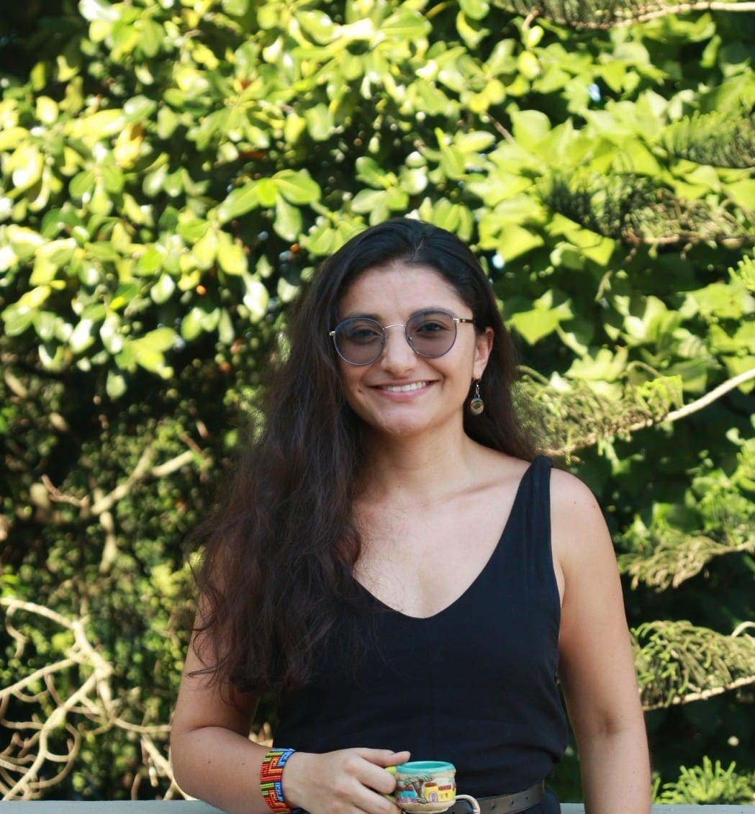

Rio de Janeiro, Brasil.
Departement Mathematik und Informatik
Universität Basel
Spiegelgasse 1
4051 Basel
Basel, Switzerland
E-mail: danielaalejandra.paivapenuela@unibas.ch
About me
I am a postdoctoral researcher at University of Basel (Basel, Switzerland), mentored by Susanna Zimmermann.
My research focuses on Algebraic and Birational Geometry, with a particular emphasis on K3 surfaces and their automorphisms, the Cremona group,
the Minimal Model Program (MMP), and the Sarkisov program.
Previously, I was a postdoc at the Institute of Pure and Applied Mathematics (IMPA), with Olivier Martin. I obtained my PhD in Mathematics there under the supervision of Carolina Araujo, after completing my master's degree at the same institution. Earlier, I received my bachelor's degree in Mathematics with an emphasis on
Statistics at Universidad del Tolima (Ibagué, Colombia).
Here you can find my
CV, and my Curriculo Lattes.
Publications/Preprints
- Cremona transformations of P3 stabilizing quartic surfaces. To appear in Women in Mathematics Latin America - ICMAM 2024, Springer-Birkhäuser
Trends in Mathematics.
- On Gizatullin's problem for quartics of Picard rank 2, with Carolina Araujo
and Sokratis Zikas. To appear in Algebraic Geometry,
(arXiv:2410.08415)
- Automorphisms of quartic surfaces and Cremona transformations, with Ana Quedo. Journal of Pure and Applied Algebra,
(arXiv:2302.09014).
My talks
- Studyng automorphisms of quartic surfaces in P3. XIII National Meeting of Mathematics and Statistics (Invited Speaker). September, 2025. Universidad del Tolima. Ibagué, Colombia.
- Birational geometry of Fano 3-folds and anticanonical surfaces. Algebra and Geometry seminar. April, 2025. Universität Basel. Basel, Switzerland.
- Cremona transformations of P3 stabilizing quartic surfaces. Algebra and Geometry seminar. April, 2025. Università di Bologna. Bologna, Italy.
- On Gizatullin's problem. Algebraic geometry seminar. September, 2024. Université Paris-Saclay. Orsay, France.
- On Gizatullin's problem. Algebraic geometry seminar. September, 2024. Università degli Studi di Milano. Milan, Italy.
- Cremona transformations of P3 stabilizing quartic surfaces. Fano Varieties in Cetraro. September, 2024. Cetraro, Italy.
- An application of the Sarkisov program. V ELGA- Latin American School of Algebraic Geometry. August, 2024. IMPA. Rio de Janeiro, Brazil.
- Cremona transformations of P3 stabilizing quartics. Foliation Theory and Algebraic Geometry. June, 2024. IMPA. Rio de Janeiro, Brazil.
- Gizatullin's problem and the Sarkisov program. Liberdade em Geometria Algébrica - LEGAL. March, 2024. Universidade Federal Fluminense. Teresópolis, Brazil.
- Automorphisms of quartic surfaces with Picard number two and Cremona transformations. 8th Iberoamerican Congress on Geometry. December, 2023. Geometry at the Frontier Research Center, Pucón, Chile.
- Superficies K3 y teoría de reticulados. Seminario de Álgebra, Geometría y Topología. July, 2023. Universidad de Antioquia. Medellín, Colombia.
- Introducción a la geometría algebraica y superficies K3. Seminario de Álgebra. July, 2023. Universidad del Tolima. Ibagué, Colombia.
- Automorphisms of quartic surfaces and Cremona transformations. Around Symmetries of K3 Surfaces. February, 2023. BIRS. Banff, Canada.
- Automorphisms of quartic surfaces and Cremona transformations. 15th ALGA (Commutative Algebra and Algebraic Geometry). February, 2023. IMPA. Rio de Janeiro, Brazil.
- A new example for Gizatullin's problem. Workshop Geometry at the Frontier III 1/2. November, 2022. Pucón, Chile.
- The Cremona Group. Student Algebraic Geometry Seminar at IMPA. November/2021. IMPA. Online Seminar.
- On the Cremona Group. Faculty Week Celebration - Science Faculty. October/2021. Universidad del Tolima. Online Seminar.
- Sobre o grupo de Cremona. Seminario 38 Movimientos. September/2021. Online Seminar.
Co-organization of seminars and conferences
Teaching
- Projective Algebraic Curves and Surfaces I (Master). Teaching Assistant of Prof. Eduardo Alves da Silva. Universität Basel. Fall 2025
- Minicourse: An Introduction to Algebraic Geometry. Lecturer. Universidad del Tolima. September, 2025
- Fundamental Mathematics. Teaching Assistant of Prof. Carolina Perdomo. Universidad del Tolima. Fall 2018
- Univariate Calculus. Teaching Assistant of Prof. Leonardo Duvan Restrepo. Universidad del Tolima. Spring 2017
- Univariate Calculus. Teaching Assistant of Prof. Leonardo Duvan Restrepo. Universidad del Tolima. Fall 2016
-
Miscellaneous
- PhD thesis: Automorphisms of quartic surfaces and Cremona transformations (pdf).
- Master's research seminar: The Cremona group (pdf).